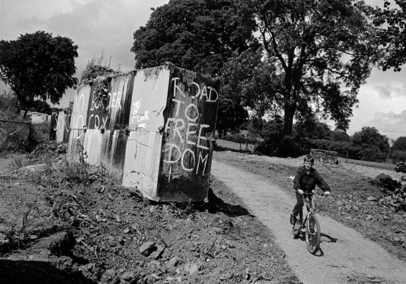

How the politics of the border and Northern Ireland's violent history intersect.
01. 11. 2018 | By Rachel Lavin
I N 1993, as the bloody conflict that was ‘the Troubles’ wore on, British authorities commissioned a special report into the ‘Irish border problem’.
Despite being 20 years into the violence that had plagued this small corner of the United Kingdom, the conclusions of the lengthy ‘scoping inquiry’ into the Northern Irish border lead senior officials in the British army to admit that it was
almost ‘physically impossible’ to close.
Since the early 1970’s, 90% of the roads crossing Northern Ireland’s meandering rural border had been cratered with explosives, blockaded with ‘dragon teeth’, concrete boulders or even scraps of railway spiked upright from the ground.
‘Unapproved’ roads were patrolled by armoured jeep or helicopter and at the few approved crossings, a armed presence regularly accompanied customs officers in their duties while at more vulnerable crossings, military checkpoints were erected,
in some cases with large watchtowers, transforming the borderlands into a heavily militarised zone.
Yet, even with boots on the ground, the border proved porous.
The core focus of the problem however was not simply violent paramilitaries evading or attacking border security forces - rather it was ordinary local people who had decided to reopen the border.
And so, often on a Sunday afternoon, men, women and children, from border communities and further afield, would gather together to fill in roads and rebuild bridges.
“Having mounted major operations these border crossings have simply been reopened making us appear ineffective,” the report bemoaned, complaining it was “embarrassing and frustrating” the security forces.
Despite acknowledging it was ‘politically unacceptable’, they requested more explosives.
“The battle of the Border was fought so fiercely and so long precisely because it was difficult. Northern ireland is still divided not only theologically but also by a geographical/psychological line.But to draw that would be even more difficult than
to decide on a Border which would meet with general satisfaction. Any generalisation about the boundaries of political sentiment is certain to be inaccurate.”
The ‘Irish Border issue’ is nothing new.
The above paragraph, written in 1969 by Guardian journalist John Cole unknowingly at the outset of the 30 year violent conflict that would become ‘The Troubles’, could just as easily have been written today as Westminster, Dublin and Brussels
deliberate over where and how the UK’s new EU customs border should exist in Northern Ireland.
The border has been an ‘issue’ on the island of Ireland since it first came into existence in the 1920’s - brokered as a solution to Ireland’s War of Independence - its acceptance the cause of the Republic’s own civil war, the focus for persistent smuggling
and the target of a campaign of attacks by the IRA in the 50’s.
But it wasn’t until the civil rights campaign of Irish Catholics in the 60’s and resulting violence between the two communities and the state that a sustained conflict broke out and the border would become a focal point for that violence
for the thirty years of the Troubles from 1969 to 1998 when the Good Friday Agreement finally brought peace to this small province.
However, the world renowned Peace Process did not really solve the border issue so much as postpone it, or at least give citizens of Northern Ireland the ability to ignore it.
Those who identified as Irish could claim Irish citizenship under the terms of the Good Friday Agreement and as Ireland and the UK had both joined the EU it meant customs posts and barriers need no longer exist. Furthermore, a ‘border poll’
once a majority demanded it would mean at some point in the future the people of Northern Ireland could decide to join the Republic and get rid of the border altogether, if they so wished.
Peace meant military checkpoints disappeared and along with it, an awareness of where the border lay.
Once heavily manned with armed personnel, military checkpoints and customs posts or cratered, blockaded and spiked, border roads returned to the scenic country roads they had once been - the only indicator of their fraught past today
are two white and black roads circular road signs dotted on either side.
So forgotten was the presence of the border in the past 20 years of peacetime that when Brexit arose, even when Theresa May was guaranteeing a ‘border backstop’ ensuring no infrastructure could exist on the border in December 2017, officials
in Northern Ireland, Ireland and the UK still didn’t know where the border existed.
It was by all accounts, invisible, taking a team of civil servants nearly six months to re-establish where the 208 official road crossings were located, only publishing their findings in June 2018, two years after the Brexit vote.
While forgetting the location of the border is one thing, forgetting The Troubles and the border’s significance in Northern Ireland’s dark past is another.
Here, The Irish Times, sets out to highlight that connection between the conflict and the border and assess what a new border might mean for the maintenance of peace in Northern Ireland.
In the 30 years of violence that defined the Troubles, over 3,500 people died (although more have died since). Nearly one in three of those who died died in bombings (30%), one in five killed were assassinated while ambushes accounted for 17% of deaths and gun battles for 11%.
A number of deaths were also caused by beatings, riots, arson, sniper fire or, as was the case for ten republicans protesting their prisoner status in 1981, hunger strike.
Over the 30 years of the conflict, as a generation became swept up in the violence, men were primarily on the frontlines, accounting for 91% of deaths in the Troubles.
The deaths of the Troubles affected both communities nearly equally; 44% of those killed between 1969 and 1999 were from the Catholic community and 36% were from the Protestant community (religion was deemed not relevant to the deaths of
the remaining 20%).
For those who perpetrated those killings, 56% of killings were caused by Republican paramilitaries such as the IRA, provisional IRA and INLA, 28% were caused by loyalist paramilitaries such as the UDA, UVF and RHC and 11% were caused by
state forces including the British Army, RUC and UDR.
Violence spiralled quickly from the outset with the highest number of deaths occurring in the early 1970’s and quickly spreading across the region.
As you can see from the above visualisation of fatal terror attacks in the UK from 1969 - 1999, fatal casualties quickly multiplied spreading across Northern Ireland (93%) and into the Republic Ireland (110 deaths) and the UK (123 deaths).
21 people were killed elsewhere in Europe in Troubles-related violence.
It is important to note that the above graph does not account for deaths caused by state actors however, the data, taken from the Global Terrorism Database does show how very little of Northern Ireland was untouched by the Conflict.
The violence in Northern Ireland was not just significant for the UK and Ireland. In fact, as the below map shows, it has been one of the deadliest conflicts in the whole of Europe in the past 50 years with this small region experiencing
one of the most sustained and densely clustered campaigns of violence the European Union has ever witnessed.
More people were killed in The Troubles than in the 9/11 attacks in the US yet many question if its legacy in Brussels and Westminster is equally felt.
For many, the Troubles has been forgotten with the small region of Northern Ireland, a population of less than two million, struggling to come to terms with the memories of its violent past.
Yet, this small province has dealt with that legacy extraordinarily well - becoming an example worldwide for how a state of dual national identities marred by a history of ethnic and sectarian strife can overcome and live in harmony.
As Irish and British relations improved, aided by the prosperity and co-operation brought by the accession to the European Union in 1993 so too did Protestant and Catholic communities in Northern Ireland - paramilitary groups lay down their
arms, a shared government between unionists and nationalists carried out devolved duties, prosperity increased and a Catholic middle class emerged, integrated education and mixed marriage became more common and while social divisions and minor conflicts
still persisted - peace was very much in process.
Then Brexit happened.

How does Brexit change the border?
Notionally at least the Northern Irish border becomes not just a border between Britain and Ireland but a border between the European Union and the rest of the world.
But even then, it’s unlike any of Europe’s other external borders.
There are nearly twice as many land border crossings between the Republic of Ireland and the North of Ireland as there are in the entirety of Europe.
The Northern Irish border meanders along 500 km of rural farmlands, country villages, along rivers and over mountains, through private farmyards, housing estates and individual homes themselves.
The Irish and Northern Irish authorities recognise 208 official road crossings, although some border residents claim that if every laneway, track and trail were included it would be closer to 300. Yet along the European Union’s land border
to the east, from the most northernly tip of FInland down to the Baltic Sea, there are only 120 established land border crossings in total.
This would make the Northern Irish border the most porous land border in Europe.
To explain why the border is so porous, one must account for the make-up of the island of Ireland’s landscape - a largely agricultural economy, with rural countryside made up of numerous small farms and villages with individual houses dotted along rural
roads.
Road networks are therefore numerous with country roads, private laneways, farm tracks all, as a result, criss-crossing the border.
Eastern Europe’s rural countryside by comparison is made up of sprawling farms, housing is clustered around urban centers and therefore regional roads are less numerous.
But by and large, the main reason there are less crossings is the history of each border.
The Northern Irish border is relatively ‘new’, it only came into existence in the 1920’s - drawn along county boundaries that made up the province of Ulster and as a result through previously existing rural communities, villages, towns and
cities.
There will be twice as many land border crossings in Ireland as there are in the entirety of Europe.
Borders between European countries and countries like Russia are far more historically ingrained- as a result roads were not built across them, populations did not settle in their hinterlands and the number of crossings that did exist were
tightly controlled.
Today Eastern European border crossings are marked by large physical structures, blockaded with traffic barricades and surrounded by fencing and compounds for customs checks.
They are policed by state personnel checking passports, customs officials monitoring the flow of goods and military personnel guarding the entrance to their respective countries.
The question for Brexit negotiators is if the Northern Irish border is to become an external European Union border what would it look like?
Would it mimic the ‘hard’ border of Russia or Ukraine or the softer borders between Norway (in the Schengen area) and Sweden (in the EU).
Above all else, will it see a return to the border of the past?
The border of the Troubles was a scene of ordinary and mundane life interrupted by shocking violence and peculiar incidents, military patrols and terror attacks, customs checks and smuggling operations, everyday passage and frequent escape.
Most of the country roads the border weaves across were designated as ‘unapproved’ leading to an invisible barrier across 90% of border roads.
The Sunday Independent reported on the peculiarities of this regulation in 1970 in an article titled ‘It’s not funny - say border men'. It referred to one area as ‘a geographical cultural de sac’ causing ‘situations which would be amusing if they were not infuriating’. Anyone caught passing the unapproved road faced hefty fines, yet the northern customs post closed at 5pm and the southern at 8pm. Churchgoers crossing the border were given a concession pass during stated hours and clergymen could use the road while ‘on their lawful business’ but not carry goods or passengers. A funeral carrying a deceased person could cross the border but the profession of cars would have to take a detour.
The border’s straddling of two separate legal jurisdictions led to serious difficulties in policing crime.
In one incident in June 1969, a farmer was found with serious head injuries in the middle of the Termon bridge, a crossing between Fermanagh and Donegal. He was removed to hospital where he later died but before investigations into his murder could begin, because the border cuts down the middle of the bridge, police had to call in a county engineer to decide which side of the border he had been killed on before the appropriate policing authority could investigate.
“After an examination of some bloodstains, Mr. Brady was able to establish that it was Northern Ireland,” The Fermanagh Herald reported at the time, “but only by a couple of feet”.
How to prevent paramilitaries from committing a crime on one jurisdiction and enforce their arrest once they crossed the border into the next state was a constant struggle.
The border of the Troubles was a scene of ordinary life interrupted by shocking violence.
Republican groups would frequently carry out attacks or bank raids on the northern side of the border and escape to the south where British authorities could not pursue them and Irish forces were not coordinated to take up the chase.
So bold did republican paramilitaries become that they often attacked British troops on the northern side of border from the southern side. Shooting was frequently reported as having ‘come from the South’ with attacks happening across hillsides, roads and rivers.
In July 1987, a British soldier on foot patrol in Belleek village was killed after being shot in the back of the head by snipers bullet, suspected of coming from the southern side of the town’s bridge.
Such cross border shooting killed a young civilian woman at Lifford Bridge, a crossing between Tyrone and Donegal, as she walked from one village where she worked in Lifford to her home in Strabane. A waitress in a Lifford hotel, she reportedly 'sank to the ground'
after getting shot in the gunfire aimed at British troops building a ramp on the bridge.
So frustrated was policing that in March 1983, a 39 year old known republican woman claimed she was 'dragged into Fermanagh’ by British police, as she waited on the south side of Belleek bridge, while her children enjoyed St. Patrick’s Day festivities in the village on the northside.
She had been facing charges in the North and only once over the bridge, the RUC were able to officially arrest her.
While republican paramilitaries regularly crossed into the North, British army incursions across the border were frequently reported and became the subject of much political controversy in the South.
In June 1992, at the Derrygoas Road between Fermanagh/Cavan The Northern Standard described a tense confrontation near this border road when nine British soldiers who had crossed into the Republic were challenged by local people working on the bog.
The paper reported that following a heated confrontation between the two parties that lasted 15 minutes the soldiers took up a firing position against the group. It goes on “Everybody, including about thirty people working in the Derrybeg bog about a quarter of a mile from the Border, armed themselves with turf.” The standoff ended after an hour when the soldiers decided to leave the area.
Tensions over incursions came to a peak at the Courtbane crossing on the Armagh/Louth border when two British army ‘ferret’ cars crossed the border at the Courtbane crossing on the Armagh/Louth border. They were surrounded by angry local people who prevented their return back over the border, boxing htem in with cars, for over an hour, and lighting one of the vehicles on fire. After tense negotiations with the hostile crowd, the four soldiers escaped back over the border in the remaining vehicle but their wheels were damaged in the process. Once on the Northern side of the border, the soldiers set about repairing their tires but were shot at as they did so. One soldier, a 36 year old man, was killed in the shooting while another was injured. The two other soldiers were forced to escape the shooting through fields in order to return to their station. One paper reported that the slain soldier lay in the road for half-an hour bleeding profusely before reinforcements could reach him. He died en route to the hospital.
It wasn’t just another bomb at a customs station. It was a bomb of death.
Aside from the problems of crossing the border, it was usually the markers of the border themselves that became the focus of violence. Customs huts were repeatedly raided, lit on fire, petrol bombed and blown up.
One customs post outside the village of Belleek on the Fermanagh/Donegal was blown up and the customs caravan that replaced it - as was the practice when a customs building was destroyed- was burnt out and replaced again twelve times in the space of two months. So relentless were the attacks that authorities decided to start towing the customs van out of the area each evening to prevent attacks overnight. However a group of armed men were reported to have then apprehended the caravan in transfer, placing it and the car towing it across the road and lighting both on fire.
One of the ugliest of these attacks was at the Killeen customs checkpoint, a frequently attacked crossing on the Armagh/Louth border. Eight people were killed instantly after two men carried a box of explosives into a customs checking facility with the intention of bombing the customs post yet again. However, the bomb exploded prematurely, killing them and six civilians, including four customs officials and two lorry drivers. Six more were injured.
A local reporter described a harrowing scene saying "it wasn’t just another bomb at a customs station. It was a dreadful nightmare of stark reality - a bomb of death".
They described how "the bodies of the dead were severely mutilated and firemen and ambulance crew had the gruesome task of picking up limbs and broken skulls, collecting the remains in plastic bags".
Such shocking violence spilled into border communities in the everyday. Bombs at customs posts shattered windows in nearby homes, hospitals and towns. Civilians caught in gunfire or explosions learnt to run for cover in their own backyards.
Bodies from the IRA’s executions were discovered left near the border, in one occasion by a man on his way to mass. Buses, even ones used by primary school children, were repeatedly hijacked and set alight, milk-lorries were planted with bombs and forced to drive toward border checkpoints, even a van delivering British newspapers was taken over and the papers thrown into the river.
The below map illustrates the scale of those incidents across the border as reported in local newspapers at the time, although these are likely to only be a sample of the day-to-day conflict experienced by border communities during the Troubles.
The violence on the border was of course a side-note to the major horrors of the Troubles - atrocities were happening all over Northern Ireland and bleeding into the Republic and the UK.
But the border was also a unique target - both for its symbolism as the manifestation of the divide between the UK and Ireland, its practical target of customs huts and military checkpoints where the British army were based and also the opportunism - in a border so wide and porous it was near impossible to close and thus near impossible to effectively police as criminals danced between both jurisdictions.
Many things have changed since this violence - with the Peace process, there are no more barriers, no cratering or blockading of country roads, no waits as military search cars and their passengers, no divides between cross border communities. New bridges and roads have been built, trade and people, aided by both the UK and Ireland’s accession to the EU, move freely and aside from the occasional border sign post alluding to its existence, the border has all but disappeared.
The question facing Brussels, Westminster and most of all the people of Northern Ireland come next March, will it stay that way?
“The point of conflict was always along the border because the conflict is about the border.
“The point of conflict was always along the border (because) the conflict is about the border,” says Peter Sheridan, formerly one of the highest ranking Catholics in the PSNI during the conflict and now Chief Executive of Co-operation Ireland, a cross-border charity that aims to promote better relations between people on both sides of the border,
“As far as most people who live around the border, (are concerned it) is invisible at the moment. There is no impediment to you crossing the border, the only difference comes in terms of using euros or sterling or miles per hour vs kilometres per hours.”
“If there were a land border, then it is difficult to see how there wouldn't be at the very least a state of civil disobedience and the history of this place shows that that grows into something else.“
Sheridan reflects on the snowballing effect of violence in the past, when increased violence led to increased infrastructure, one triggering the other.
“Some of the first attacks happened on customs posts along the border, that required then the police to go in and guard customs officers and the customs posts, and when the police were attacked along the border, the British army came in to support the police. And when the British army came in to protect the police, they built physical structures on the border”.
He points our that, during the Troubles, wihin 10 miles in South Armagh, there were 12 army watchtowers, four helicopter bases, six army bases, four police stations, six permanent border road checkpoints and numerous other roads sealed off.
Sheridan is sceptical of how some of the proposed means to monitor the border in the event of a future trade deal would prevent this happening again.
Terrorists are scrappling for a reason and we need to make sure we don't give them a reason.
“If you put up a drone, even though it’s about customs… it's seen as surveillance because of the conflict. The likelihood is someone will try to shoot that drone down.”
“Similarly, (the idea of) ad-hoc border stops by border force officers - what happens when the first border force officer’s car gets rammed or he/she gets kidnapped or beaten up or worse?”
“People say ‘we’ve no intention of any physical infrastructure on the border’ and I agree, they haven't. But that's not what happened in the past. That’s the bit they’re missing.”
While Peter argues violence is not inevitable but a matter of choice, he warns there are violent extremists still waiting for an opportunity to ‘resurrect the (IRA’s) flagging campaign’. He cites the Chief Constable’s warnings and calls for an additional 400 officers to be dispersed to border regions.
“These guys (terrorists) are scrappling around looking for a reason and my point is we need to make sure we don't give them a reason.”
“It's not (that you) make your policy because the person who has the biggest gun wins. It's about recognising that there is a possibility and that might mean you make different decisions around it," he warns.
"If you simply blank it out of your mind and say 'that's never going to happen' then that’s also a mistake.”
However, there are others that are sceptical that a hard border would see a return to the violence of the past.
Speaking from a unionist perspective, Professor Peter Shirlow, a historian and leader of Civic Unionism, argues the same conditions that began the violence in 1968, namely the lack of civil rights for Catholics and the factors that sustained it, such as widespread anger over state violence, reactionary terrorism and the supply of arms, no longer exist.
“Where would this violence come from? Why would they go back to war, why would they do that?” says Shirlow. “People forget that the Peace Process, despite its ups and downs, has been incredibly successful. It's a different place now, it's a different mood. How would we ever go back to the violence that we had when the reasons and causes of that violence have gone?
“We’re not a pathological people. We don't go around and engage in violence because there are difficulties. There is more to this than a simple ‘here's another episode’ – ‘here's a knee jerk’ and people get the guns out again.”
We are not a pathological people. How would we ever go back to the violence that we had?
When it comes to the backstop, Shirlow argues that contrary to the DUP’s rejection of any difference in regulatory alignment to the UK, many unionists see Northern Ireland getting special status under a different customs arrangement as a positive.
“There are other unionists who think that would actually strengthen the Union, not undermine it, because the Northern Ireland would be a special case. It would stay within the Customs Union, it would attract investment into Northern Ireland, it would obviously make Belfast port a key site for the movement of goods and it would provide an economic dividend.”
By contrast, Shirlow sees that, if anything, a poorly played out Brexit or backstop would only strengthen the nationalist cause.
“A plan for a border poll that's been the most vociferous issue that has emerged out of (Brexit). “
A border poll, as agreed in the Good Friday Agreement, could take place when a majority of the population indicate support for a referendum on whether or not Northern Ireland should become a part of the Republic of Ireland. It has long been promised but also feared as a catalyst for bringing up old wounds too soon, especially for the protestant unionist community who fear becoming an ethnic minority in the Republic.
Could Brexit become a new issue that divides Northern Irish society along old lines and sparks the call for a border poll?
The below graph represents the Brexit vote in Northern Ireland where, while the majority of Northern Ireland voted to stay, a look at traditional voting patterns reveals unionist and nationalist demographics divided along Brexit lines.
Colin Harvey, a Professor of human rights law at Queens University Belfast School of Law
believes that away from the the immediate threat of violence, Brexit’s social and political effects could be ‘profoundly destabilising’ to Northern Ireland
This follows the findings of a collaborative research project compiled by academics across the North called Brexit LAW NI that conducting townhalls across Northern Ireland, something which Professor Harvey says revealed a deep level of anxiety among border communities.
“There is an element of re-traumatization in the border conversation – for people in communities who have lived through the conflict, this is all bringing back terrible and desperate memories.”
He warns of the risks of Brexit to the Peace Process owing to a lack of understanding in Westminster of the full implications of the Good Friday Agreement and the lack of protections for equality rights supported by the European Union.
“There's a real palpable sense the human rights and equality promises of the Peace Process have not been delivered at all and that was prior to the Brexit vote.
“All the specific issues around equal marriage, language rights, questions of abortion law reform, it all blends together to create a very disturbing picture in terms of human rights and equality protections for everyone and then you add into that the already febrile mix - Brexit and the loss of that European Union framework and you've got a recipe for a real rights and equality crisis here.”
“I think it's just all combining into a perfect storm situation for constitutional rights and equality matters.
Drawing parallels with the civil rights crisis of the 1960’s, he warned of the further deepening of divisions in identity Brexit could bring.
“British identity now becomes non EU, Irish identity remains EU. You only need to say that out loud to realise how divisive that potentially will become here .”
There is an element of re-traumatization. This is all bringing back terrible and desperate memories.
"The best we could hope for now is a sensible withdrawal agreement between the EU and the UK that respects the political commitments (to the backstop) that were made in December of 2017.
"What was clear in the work we've done is that we are making the best of a bad situation. Very few people could give us a coherent argument as to what the opportunities of Brexit for Northern Ireland (will be). - it seems to be all about risk.”
Warning of the risk of conflict the border could bring, he says ““I don't think anybody in this conversation at all is any sense justifying or condoning violence but it's coming out of a deep knowledge and understanding of the history of Northern Ireland.
The concerns that we heard were just about learning from our history, not in any way condoning or justifying the violence response, just people with a very deep and profound knowledge of the society expressing their anxiety and fears about what might happen if we were to see the re-emergence of a hard border."
"You don’t even have to think about it in terms of armed groups - although it is clear in our work in relation to that that dissident Republicans do see a hard brexit as an opportunity.
I think it’s ordinary people in these border areas who are live complicated lives, facilitated by the membership of the European Union, who would be protesting against the disruption that would be the inevitable consequence of a hard brexit and it’s really as simple as that.
"What starts as civil disobedience, what starts as people protesting - who knows where that all ends up in a society like Northern Ireland.
In the 1960s, very few people saw what was coming next then and it's people who have an understanding of our history and worry about where this could lead are rightly putting their concerns out there and they are right to do that.”
While Brexit negotiations on the border continue in Brussels, Belfast, Dublin and Westminster, it is that reality of ordinary people living on the border that appears to be lost.
No matter what the political establishment decide, any hard border imposed by the EU, WTO or UK may simply not be tolerated by local people on the ground.
Even if it escalated to a military presence, as the British army scoping inquiry of 1993 pointed out, after 20 years of violence and with boots on the ground, it was ‘physically impossible to impose’.
A survey of the border crossings reveals how crossings were repeatedly opened during the troubles – streams filled in with sand, craters filled in with rubble and bridges rebuilt with telephone polls. Locals repeatedly and relentlessly came back to their rural roads and rivers of the border area and rebuilt what had been cratered, demolished and destroyed.
As one local newspaper reported on the locals reopening of Munnily Bridge put it “Nothing seems to frustrate local people so much as the close of Border roads, a fact of life the Brits seem to have missed.”
Those ‘boundaries of political sentiment’ Guardian journalist John Cole first commented on in 1969 that have had so much lip service paid to them in the past two years, may prove not just ‘certain to be inaccurate’ but ultimately, impossible to enforce.